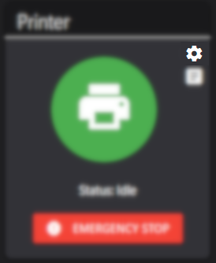
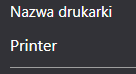
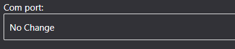
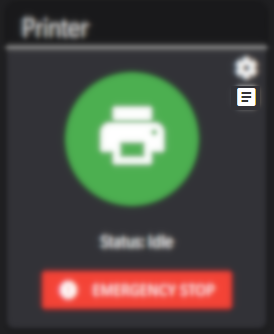

Zmiana nazwy drukarki
Po sparowaniu drukarka nie posiada przypisanej nazwy.
[11:15:42][Info] Printer "null" has connected
Aby ułatwić zarządzanie drukarkami w przyszłości, można im nadać nazwę:
- Wchodzimy w sekcję
Drukarki

- Wybieramy ikonę zębatki przy drukarce której nazwę chcemy zmienić
 - W polu
Nazwa drukarkimożemy podać nową nazwę

Zmiana portu drukarki
Po sparowaniu drukarka nie posiada przypisanego portu COM.
Przed pierwszym drukiem należy ustawić odpowiedni port.
- Wchodzimy w sekcję
Drukarki
- Wybieramy ikonę zębatki przy drukarce którą edytujemy
- W polu
Com portustawiamy odpowiedni port.

Podgląd terminala drukarki
W każdym momencie mamy podgląd terminala wyjściowego drukarki.
Aby go wyświetlić należy:
- Wejść w sekcję
Drukarki
- Wybrac ikonę terminala przy drukarce, której terminal chcemy wyświetlić
